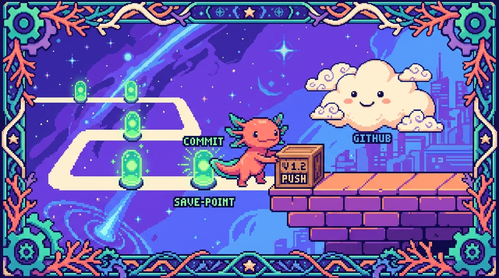

Capítulo 05 — Git y GitHub

Tus cuatro proyectos viven en GitHub. Cada vez que la IA "subió cambios", por debajo estaba usando Git. Entender Git es entender cómo se guarda, se versiona y se comparte el código en el trabajo real. Y de paso te da una red de seguridad: puedes experimentar tranquilo, porque siempre hay un punto al que volver si algo se rompe.
1. El problema que Git resuelve
Seguro te ha pasado: escribes un trabajo y vas guardando copias para no perderlo. trabajo.doc,
trabajo_final.doc, trabajo_final_AHORA_SI.doc, trabajo_final_v3_bueno.doc… y al final ni tú
sabes cuál es el bueno. Ahora súmale otra persona trabajando en lo mismo: ¿cómo juntan sus
cambios sin pisarse uno al otro? Ese caos es exactamente lo que Git vino a ordenar.
🟦 ¿Qué significa? — Control de versiones
Un sistema de control de versiones es un programa que guarda el historial completo de los cambios de tus archivos: quién cambió qué, cuándo y por qué. Puedes volver a cualquier punto anterior, comparar versiones y combinar el trabajo de varias personas sin perder nada por el camino.
🟦 ¿Qué significa? — Git
Git es el sistema de control de versiones más usado del mundo. Vive en tu propia computadora (no necesita internet para funcionar) y va guardando "fotos" de tu proyecto a lo largo del tiempo. Lo creó en 2005 Linus Torvalds, el mismo que hizo Linux.
💡 Tip — Git ≠ GitHub
No son lo mismo, aunque se confundan todo el tiempo. Git es la herramienta y vive en tu computadora. GitHub es un sitio web donde guardas una copia de tus proyectos Git en internet, para respaldarlos y compartirlos. Puedes usar Git sin GitHub; GitHub sin Git no tiene sentido. Y hay alternativas a GitHub, como GitLab o Bitbucket: son la misma idea, páginas para alojar repositorios Git.
2. El vocabulario esencial de Git
Con estas cinco palabras tienes cubierto el 90% de lo que vas a usar a diario. Léelas con calma, sin prisa.
🟦 ¿Qué significa? — Repositorio (repo)
Un repositorio es la carpeta de tu proyecto, con su historial de cambios incluido. Cuando "inicias Git" en una carpeta, esa carpeta se convierte en un repo: además de tus archivos, guarda toda la historia en una subcarpeta oculta llamada
.git.tunal-digital,PolyPaw,RachaSimpleyFaroson, cada uno, un repositorio.🟦 ¿Qué significa? — Commit (punto de guardado)
Un commit es una "foto" del proyecto en un momento dado, acompañada de un mensaje que describe qué cambiaste. Piensa en el punto de guardado de un videojuego: siempre puedes volver a él. Cada commit tiene un identificador único, un código como
e7c66d6. Buen hábito: muchos commits pequeños y frecuentes, con mensajes claros ("añade formulario de contacto"), valen mucho más que uno gigante de "muchos cambios".🟦 ¿Qué significa? — Rama (branch)
Una rama es una línea de trabajo paralela. La principal suele llamarse
main. Cuando quieres probar algo sin arriesgar lo que ya funciona, creas una rama aparte, trabajas ahí, y si sale bien la unes de vuelta. Si sale mal, la descartas sin más ymainni se entera. ¿Dónde se usó en tu proyecto? Este mismo manual se escribió en la ramaclaude/programming-fundamentals-manual-p2xv7n, separada demain, y después se unió.🟦 ¿Qué significa? — Merge (unir)
Hacer merge es combinar los cambios de una rama dentro de otra; por ejemplo, traer lo de tu rama de trabajo a
main. Git intenta juntar ambas partes automáticamente, sin que tengas que copiar nada a mano.🟦 ¿Qué significa? — Conflicto (merge conflict)
Un conflicto aparece cuando dos ramas tocaron la misma línea de un archivo de formas distintas y Git no sabe con cuál quedarse. No te asustes: no es un error grave. Git te muestra las dos versiones y tú decides cuál vale. Pasa de vez en cuando, y se resuelve a mano.
3. Los tres "lugares" donde vive tu cambio
Esta es la parte que más cuesta al principio, así que vamos despacio. Antes de quedar guardado en internet, un cambio pasa por tres estados:
Tu carpeta Zona de Repositorio GitHub
(working dir) preparación local (remoto)
│ (staging) │ │
editas un ──git add──► listo ──git commit──► guardado ──git push──► respaldado
archivo para guardar (foto) en internet
🟦 ¿Qué significa? — Área de preparación (staging)
El staging es como una "sala de espera" donde decides qué cambios entran en el próximo commit. A veces editas muchos archivos a la vez pero solo quieres guardar algunos: con
git addlos mandas a esa sala de espera. Es lo que te permite hacer commits ordenados en vez de un revoltijo.🟦 ¿Qué significa? — Local vs. remoto
Local es lo que está en tu computadora. Remoto es la copia que vive en internet (GitHub). Por convención, al remoto se le llama
origin. Trabajas en local y, cuando quieres respaldar o compartir, empujas tus cambios (push) al remoto. Y para traerte lo que haya en el remoto, jalas (pull).
4. El flujo de trabajo, con sus comandos
Este es el ciclo que vas a repetir miles de veces, casi sin pensarlo:
| Paso | Comando | Qué hace |
|---|---|---|
| 1. Ver el estado | git status |
Muestra qué cambiaste y qué falta por guardar |
| 2. Preparar cambios | git add archivo (o git add .) |
Pone cambios en staging |
| 3. Guardar (foto) | git commit -m "mensaje" |
Crea el commit con un mensaje |
| 4. Subir a GitHub | git push |
Envía tus commits al remoto |
| 5. Traer cambios | git pull |
Descarga los commits que haya en el remoto |
| — Ver historial | git log |
Lista los commits anteriores |
| — Crear rama | git checkout -b nombre |
Crea y entra a una rama nueva |
💡 Tip — El mensaje de commit le habla a tu yo futuro
Dentro de seis meses no vas a recordar qué hiciste hoy, palabra. Un buen mensaje ("corrige el cálculo de la racha cuando se salta un día") te ahorra horas de buscar a ciegas. Escríbelos en presente y cuenta el qué y el por qué, no el cómo.
⚠️ Cuidado — Nunca subas secretos
Las contraseñas, claves de API y tokens jamás deben acabar en un commit. Una vez que entran, se quedan en el historial para siempre, aunque después los borres del archivo. Para eso existe el archivo
.gitignore.🟦 ¿Qué significa? — .gitignore
Es un archivo de texto donde listas lo que Git debe ignorar, es decir, lo que no quieres guardar: claves secretas, la carpeta
node_modules(dependencias que se reinstalan solas), archivos temporales y demás. ¿Dónde se usa en tu proyecto? Faro tiene un.gitignoreque excluye.env.local, el archivo donde viven las claves de Supabase y OpenAI. Así no se suben por error nunca. El propioCLAUDE.mddel proyecto lo deja por escrito: "Nunca exponer claves en el cliente ni commitearlas."
5. Pull request: la forma de proponer cambios
🟦 ¿Qué significa? — Pull request (PR)
Un pull request ("solicitud de incorporación") es una propuesta, hecha en GitHub, de unir tu rama a otra (normalmente a
main). Viene a decir: "preparé estos cambios, ¿los revisamos y los unimos?". Antes de fusionar nada, deja ver el diff (las diferencias), comentar y aprobar. ¿Dónde lo viste? Esta primera tanda del manual se subió como el Pull Request #14 de tu repoorganizer; tú lo revisaste y lo fusionaste amain. Así funciona el flujo profesional: nada entra amainsin pasar antes por un PR.🟦 ¿Qué significa? — Diff (diferencias)
El diff te muestra, línea por línea, qué se añadió (normalmente en verde con
+) y qué se quitó (en rojo con-) respecto a la versión anterior. Es la manera de revisar el trabajo sin tener que releer el archivo entero.
6. Instalarlo (cuando estés en tu computadora)
- Descarga Git de https://git-scm.com e instálalo (si usas macOS, puede que ya lo tengas).
- Comprueba que quedó instalado: en la terminal escribe
git --versiony debe responderte con un número. - Preséntate ante Git una sola vez, para que firme tus commits con tu nombre:
git config --global user.name "Edwar" git config --global user.email "tu-correo@ejemplo.com" - Crea una cuenta gratis en https://github.com (la tuya ya existe:
Edhdez1).
💡 Tip — No memorices, entiende el ciclo
No hace falta que te sepas todos los comandos de Git de memoria; hay cientos. Con tener claro el ciclo editar → add → commit → push y saber buscar el resto cuando lo necesites, vas más que sobrado para empezar. Lo demás llega solo con la práctica.
✅ Checklist — ¿ya domino esto?
- [ ] Entiendo qué problema resuelve el control de versiones.
- [ ] Distingo Git (herramienta local) de GitHub (sitio web remoto).
- [ ] Sé qué es un repositorio, un commit, una rama, un merge y un conflicto.
- [ ] Comprendo los tres lugares: working dir → staging → commit → push a remoto.
- [ ] Conozco el ciclo de comandos
status → add → commit → pushy para qué sirvepull. - [ ] Sé qué es un pull request, un diff y por qué nunca se suben secretos.
🧪 Ejercicios
- El videojuego. Explica, con la analogía de los puntos de guardado, qué es un commit y por qué conviene hacer muchos pequeños en vez de uno gigante.
- Ordena el flujo. Pon en orden estos pasos:
git push, editar el archivo,git commit,git add. Explica qué hace cada uno. - Local o remoto. ¿Cuáles de estas acciones necesitan internet?
git add,git commit,git push,git pull,git log. - Secretos. Tu amigo va a subir a GitHub un archivo
config.jscon la clave de su API dentro. ¿Qué le adviertes y qué solución le propones? - 💻 Tu primer repo (cuando tengas Git). Crea una carpeta, ábrela en la terminal, ejecuta
git init, crea un archivo, y haz tu primer ciclo:git status→git add .→git commit -m "primer commit"→git log. Anota qué mostró cada comando. - Relee tu propio PR. Entra al Pull Request #14 de tu repo
organizeren GitHub y observa la pestaña de Files changed: eso es un diff. Identifica una línea añadida (verde).
🎉 ¡Terminaste el Módulo 00! Ya tienes el mapa mental completo: sabes qué es programar, cómo funciona una computadora, cómo viaja la información por internet, cómo dar órdenes por terminal y cómo se guarda y comparte el código con Git. Con esta base, el resto encaja.
➡️ Siguiente módulo: 01 — HTML (en preparación).